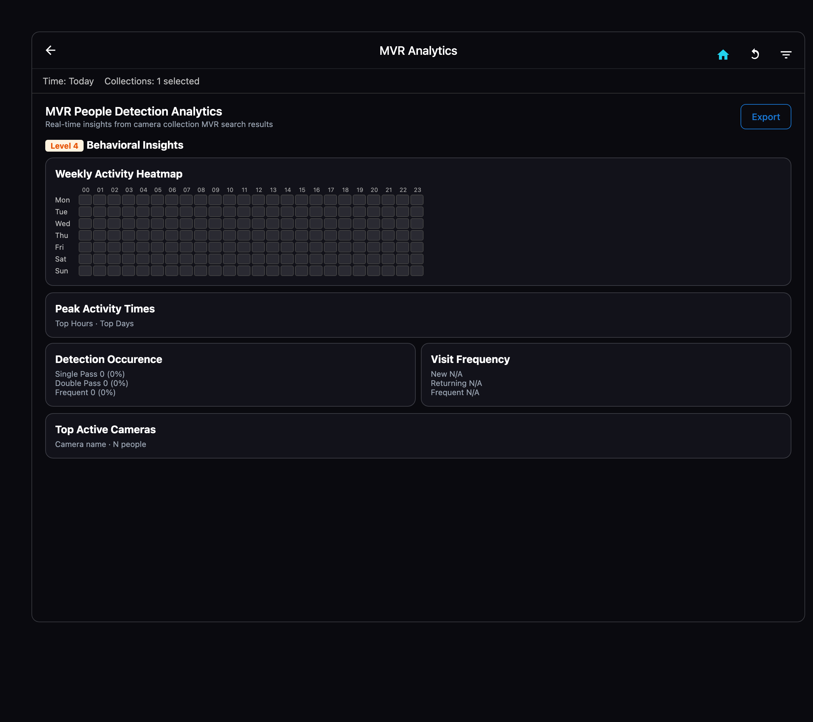

Value Thesis
Value Thesis
Machine Vision · Edge Intelligence · Operational Action
How EyeNet changes the machine vision landscape
From passive cameras to on-premises vision that detects, decides, and acts — across home care, SME, enterprise, industry, and fleets.
Why EyeNet is a competition breaker
Not another camera cloud
Video never has to leave the site. Full offline operation. Competitors sell bandwidth; EyeNet sells sovereignty.
Action, not archives
Presence, zones, fall, voice, POI, and signage fire real workflows — mobile, email, webhooks, HubSpot, clinical apps. VMS stores yesterday; EyeNet runs today.
Products, not projects
Six vertical apps. Five deployment modes. One platform. Integrators stop reinventing vision for every RFP.
Hardware humility, software ambition
Any camera. ~16 GB PC. Minutes to first detection. No GPU farm. No proprietary lock-in box.
Why EyeNet is a competition breaker
Where cloud dies, EyeNet lives
Ships, clinics, cottages, night posts, Virtual Wards — connectivity-hostile, privacy-hostile environments. That is the market others abandon.
One fabric: on-site and remote
Stations, Vprofile, mobile, PC, Matrix over VPN. Staff at the desk or at home. Fleet at sea or in port. One truth.
Safety layer cloud RPM cannot fake
Vitals-only remote care is half a product. EyeNet adds presence, secure zones, fall, and help-calls — tokenized into health stacks, not dumped as video.
Marketing that proves itself
Demographic-adaptive signage with measurable impressions and A/B in the wild. Screens stop being hope; they become a studio.
Night shift, automated
First real automation of guard vigilance, perimeter Presence, Vradar motion, and forensics. Security headcount stops scaling 1:1 with sites.
Defensible by architecture
Privacy-first edge CV + vertical depth + partner channels (Talos / TMAIX, maritime, HubSpot-first CRM). Hard to copy as a feature checkbox.
They sell
- Cloud storage & monthly bandwidth
- Passive recordings & dashboards
- Generic “AI boxes”
- Projects that take quarters
EyeNet ships
- On-prem decisions & zero video cloud
- Targeted notifications that run the operation
- Purpose-built apps for real jobs
- Detection in minutes — scale by hardware
You don’t watch cameras — they watch for you
Live your day
With EyeNet, you don’t live in a camera wall — you live your day. Events that matter find you as targeted alerts on phone, email, and apps, wherever you are. The platform watches; you only act when it counts.
Stop staring at feeds
Stop staring at feeds. EyeNet watches 24/7 and pings you only for what matters — anywhere you go.
Alerts, not anxiety
Camera walls create anxiety. EyeNet creates notifications: the right alert, to the right person, at the right time.
Cameras work for you
You don’t monitor cameras. Cameras monitor for you — and message you when something actually needs you.
With EyeNet…
Fleet manager
With EyeNet, a fleet manager gets a clear operational outlook of every ship — who is onboard, where they should be — with a few targeted mobile notifications even on thin connectivity.
Care coordinator · Virtual Ward
With EyeNet, a care coordinator gets hospital-grade safety in every unstaffed home — falls, help-calls, and zone breaches as a few targeted alerts in the clinical app.
HR · People ops
With EyeNet, an HR lead gets live staff presence across office and remote — without chasing anyone — via a few targeted exception notifications and HubSpot updates.
Security supervisor
With EyeNet, a security supervisor gets night-shift certainty that posts stay awake and perimeters stay clean — with a few targeted mobile alerts instead of constant screen-watching.
With EyeNet…
Family · cottage & remote living
With EyeNet, a parent gets peace of mind for a cottage or a student living away — intrusion and presence events as a few targeted phone notifications, video never forced to the cloud.
Mall marketer
With EyeNet, a mall marketer gets foot traffic turned into measurable studio ROI — who saw what, what converted — with a few targeted campaign digests instead of guesswork.
Shop manager
With EyeNet, a shop manager gets customer movement as floor intelligence — counts, paths, dwell, and occupancy — with a few targeted digests and behavioural alerts instead of walking the floor blind.
With EyeNet, vision stops being footage and starts being decisions.
With EyeNet, one subscription turns cameras into operators that never sleep.
With EyeNet, presence, safety, and marketing stop needing extra headcount.
With EyeNet, every site — home, office, ship, mall, shop — reports only what matters.
What
On-device AI. Full offline. Data sovereignty by default.
Triggers → mobile, email, webhooks, signage, gates.
Any camera. ~16 GB PC. 1 room → enterprise mesh.
Why
1 Home care · Virtual Ward
Care provider · MDT clinician · patient / family · Talos / TMAIX eHealth partner
- Caregiver presence — right staff, right home, right time (visit assurance)
- Secure zones — alarm on unspecified persons in/around the dwelling
- Fall detection — already-developed automation trigger → care team
- Voice / help-call — spoken request for help → immediate actionable alert
- Clinical fuse — tokenized events into ePokratis / IoMT / telemedicine (not cloud video)
- Virtual Ward — hospital-level care at home: admission avoidance & early discharge
Automated notifications
- MDT / care coordinator · on-call clinician
- Assigned caregiver (mobile)
- Patient family / sponsor (selected events)
- Telemedicine / ePokratis case queue

Visual: talosgroup.eu/solutions/integration/homecare
Why it matters
Differentiator vs vitals-only RPM: the home becomes a monitored care environment. Privacy by architecture — vision stays on-prem; only fall / help / presence / zone events reach the health stack.
Partner: Talos eHealth / IoMT · TMAIX ePpocrates eCloud
Why
2 HR Presence — SME & enterprise
HR · facilities · office ops — automatic staff presence, zero HR effort
- Entrance / exit stations — Presence stations at doors for check-in / check-out
- Vprofile cameras — entrances, meeting rooms, mess / break areas
- Presence apps — staff mobile phones and desk PCs
- Remote employees — same Presence stack works when staff work from home
- Hands-off HR — purely automatic; no manual roll-call or HR staff effort
- HubSpot CRM — first CRM connector: sync contacts, post grants to HubSpot in real time
Automated notifications
- Employee (Presence app confirmations)
- Line manager (exceptions / late / no-show)
- HR / People ops (daily digests, not manual chase)
- Facilities · HubSpot contact timeline (grants)

Visual: eyenet-vision.com
Why it matters
One Presence fabric for on-site and remote. Who is in, where, and when — without badges-only friction or spreadsheet attendance.
CRM path: HubSpot first; further CRM connectors follow the same pattern.
Why
3 Security personnel — night & perimeter
Security firms · corporate / industrial / government guard ops
- Night-shift automation — first-time automated monitoring that guards stay awake and alert
- Presence at posts — Presence services on watch stations across the shift
- Perimeter nodes — Presence nodes at fences, gates, and outer rings
- Vradar — motion detection, POI / people-match alerts on patrol feeds
- Forensics — continuous recording with timestamped evidence for incidents
Automated notifications
- On-duty guard (mobile / post alarm)
- Shift supervisor · SOC
- Site security manager
- Response team · client facilities (critical)

Visual: eyenet-vision.com
Why it matters
Night coverage stops depending on hope. Auto-escalate when a post goes quiet; perimeter + Vradar catch motion before it becomes a breach.
Why
4 Cottage & remote living
Families · cottage owners · undergraduates away from home
- Cottage / second-home protection — intrusion and unknown-person alerts when empty
- Remote students — undergraduates living away; family peace of mind without cloud video
- Presence check — confirm someone is (or should be) in the dwelling
- Secure zones — alarm if an unspecified person enters living areas
- On-prem privacy — footage stays local; phone alerts only when needed
Automated notifications
- Owner / family (mobile push · email)
- Resident (student / occupant)
- Caretaker / neighbour (optional)
- Local response contact (critical only)

Visual: eyenet-vision.com
Why it matters
Protect people and places that sit far from family — lightly, privately, without a full security team.
Why
5 Shipping — crew where they should be
Captain · fleet manager · shore HQ
- Everyone in place — Presence / Gate / Sentinel ensure crew are where they should be
- Exact onboard count — know precisely how many people are onboard at any moment
- Shore reports anytime — automated attendance & headcount packs to HQ
- Minimal connectivity — full local ops at sea; sync over thin / intermittent links
- Fleet Matrix — VPN mesh; degraded queue — no data loss when offline
Automated notifications
- Captain · bridge / duty officer
- Chief mate · security officer (onboard)
- Shore fleet ops · CSO
- Fleet HR (attendance / compliance packs)

Visual: eyenet-vision.com
Why it matters
Ships cannot depend on cloud VMS. EyeNet gives captain and shore the same truth: who is onboard, where they are, with reports that travel on minimal bandwidth.
Why
6 Mall marketing studio — foot traffic → intelligence
Mall operators · retail marketing · agencies · brand studios
- Read the room — age, gender, group size drive playlist switches in milliseconds
- Zero surveys — know who sees each display: views, dwell, engagement
- A/B in the wild — swap content on live audience data; measure what converts
- Mall as studio — digital signage network becomes a measurable marketing studio across concourses, shops, and spots
- Prove ROI — impression reports, engagement rates, footfall-to-sales funnels
Automated notifications
- Marketing manager (campaign / ROI digests)
- Content / media ops (playlist & A/B triggers)
- Mall / store operations
- Agency · brand partner (scheduled reports)

Visual: eyenet-vision.com
Why it matters
Static screens burn budget. Vision-adaptive Signage turns mall foot traffic into measurable marketing intelligence — content that reacts, and numbers that justify spend.
Why
7 Shop floor — customer movement
Shop managers · store ops · multi-site retail
- People counting — Face / Body / Both across entrances and floor cameras
- Paths & heatmaps — how customers move through aisles and zones
- Occupancy & peaks — busy hours by area, not guesswork
- Dwell & visit patterns — where shoppers linger vs pass through
- Behavioural alerts — occupancy / dwell / path / co-presence → mobile, email, webhook
- On-prem privacy — video stays local; managers get digests and alerts, not cloud footage
Automated notifications
- Shop manager (movement / occupancy digests)
- Store ops · shift lead (busy-zone / dwell alerts)
- Regional retail ops (multi-site packs)
- Loss prevention · facilities (selected behavioural events)

Visual: EyeNet Analytics
Why it matters
Turn existing CCTV into floor intelligence — count, path, and act — without a separate analytics stack. Signage proves marketing ROI; shop floor proves how customers move.
Use case → primary why
Packages — B2C · B2B · Enterprise
1 B2C Light
Freemium + self-serve · $20–$300/month · event options $200–$1,200
Package
- Signage Lite — $30–$100/mo · marketing consultants, small agencies
- Home Security Lite — $20–$50/mo · homeowners, small property managers
- Event Security Lite — $200–$1,200/event · contractors, venue managers
- Retail Compliance Lite — $50–$100/mo · small retail, bars, restaurants
- Free funnel (60–90 days) → Lite / Pro · web signup, app-first
Audience characteristics
- Independent professionals & micro-SMEs
- Low friction, credit-card self-serve
- Wants alerts & ROI without an IT project
- High volume, shorter LTV, fast payback (1–2 mo)
Target share 1–3% → ~$5–45M opportunity.
Addressable pockets
- 100,000+ marketing consultants
- 140M homeowners · 2M+ Airbnb hosts
- 50,000+ independent security contractors
- 1.5M+ small retailers / F&B
Packages — B2C · B2B · Enterprise
2 B2B — Starter & Professional
Sales-assisted SaaS · $500–$3,000/month · multi-site ready
Package
- Starter — $500–$1,000/mo · 1–5 locations · 5 cameras · single app · basic support
- Professional — $1,500–$3,000/mo · 5–20 locations · 25 cameras · multi-app · priority support
- Typical ACV path toward ~$12K–$36K/year per account
- Mobile / wearable variants: +40–60% premium where needed
Audience characteristics
- Growing SMEs & mid-market facilities
- Needs Presence, Gate, Signage — not a full custom build
- Buys on ROI + compliance, not DIY freemium
- Retention 85–90% · CAC payback ~3–4 months
Primary commercial wedge before full Enterprise.
Who buys
- Multi-location retail & offices
- Regional security firms
- Schools / campuses (pilot to roll-out)
- Warehouses & light industrial sites
Packages — B2C · B2B · Enterprise
3 Enterprise
Strategic accounts · $5,000+/month · unlimited scale · custom integrations
Package
- Unlimited locations / cameras · Matrix multi-site · VPN fleets
- Custom integrations (ERP, CRM, eHealth, SIEM) · dedicated support
- Contract band $6K–$150K+/year · planned avg ACV often $12K–$20K+
- Home care / Virtual Ward, maritime, municipal, multi-brand retail
Audience characteristics
- Large orgs: security, compliance, operations boards
- Needs data residency, SSO/RBAC, audit, SLAs
- Multi-vertical roll-out after pilot proof
- High LTV (~$144K modeled) · CAC $3K–5K · LTV:CAC ~40:1
Target 1–2% share → ~$20–80M revenue opportunity.
Segment map
- Large retail: 5,000+ locs · target 1,000–2,000 · $12–24M
- Security agencies: 20,000+ · target 500–1,000 · $6–12M
- Education: 130,000+ schools · target 500–1,000 · $6–12M
- CRE: 50,000+ buildings · target 1,000–2,000 · $12–24M
- Gov / LE: 15,000+ agencies · target 200–500